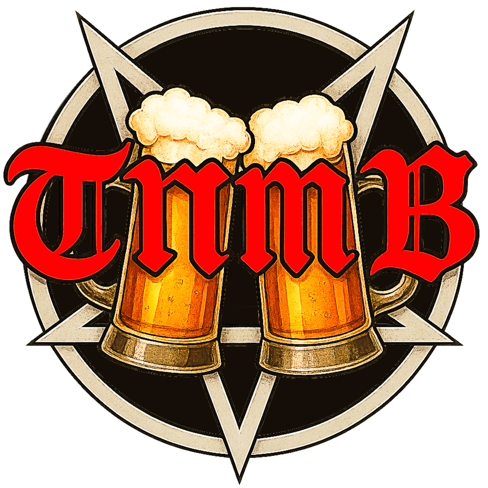

Inngang + 2 TNMB Buck
⭐ Anbefalt
550 kr
2 TNMB Buck inkludert
Kjøp billett
TNMB ØLSMAKING 2027Velg billettype nedenfor. En TNMB Buck kan veksles inn i en TNMB-øl etter smakingen og er kun tilgjengelig som del av enkelte billettyper. Etter betaling mottar du kvittering på e-post med lenke til Facebook-arrangementet.